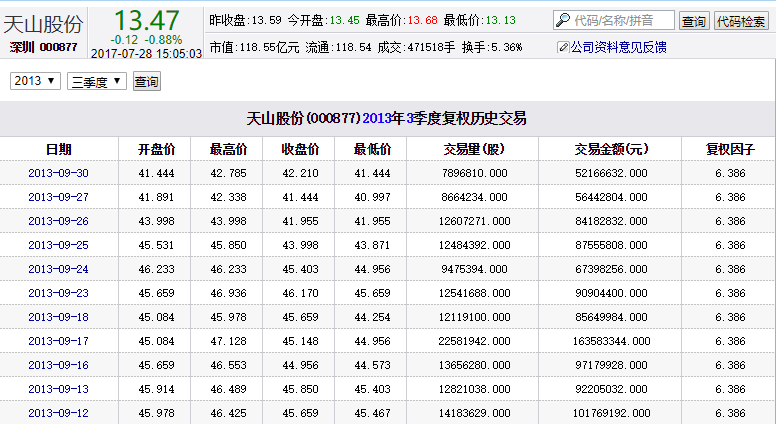

一直想建立一个数据库，存有所有A股的K线数据，然后当我有什么想法的，就能够编写策略来进行验证。我知道有很多类似的平台，比如JoinQuant，可以在线测试策略。可是呢，一方面，我不想把策略代码交由任何第三方，另一方面，用别人的框架总是很不舒服，学习成本太高。所以我就用Python自己实现一个数据库。考虑到我一般不做高频交易，所以只需要日K线级别的数据。
查了很多网站，最后还是觉得只有新浪财经最佳。比如天山股份(000877)复权历史交易_新浪财经_新浪网这个地址就显示了天山股份2013年第三季度的后复权日K数据。

是的，是后复权数据！！还可以免除自己处理复权的麻烦。
爬取网页很容易，稍微麻烦一点的是如何解析html。其实也很简单，直接看代码：
class DayK:
# ......
# download the date of a given season
# year: year
# season: season, 1~4
# return: the daily K line in this season, desc ascending ordered by date
def __fetch_season(self,year,season):
url=(
'http://vip.stock.finance.sina.com.cn/corp/go.php/'
'vMS_FuQuanMarketHistory/stockid/%s.phtml?'
'year=%s&jidu=%s'
% (self.__symbol,year,season)
)
fd=request.urlopen(url=url,timeout=5)
html=fd.read().decode('gbk')
fd.close()
start=html.find('<table id="FundHoldSharesTable">')
if start<0:
raise IOError('wrong IO')
end=html.find('</table>',start)
if end<0:
raise IOError('wrong IO')
html=html[start:end]
regex=re.compile('<[^>]+>')
cells=re.sub(regex,'',html).split()
k=[]
for i in range(9,len(cells),8):
date=cells[i]
op=float(cells[i+1])
hp=float(cells[i+2])
cp=float(cells[i+3])
lp=float(cells[i+4])
k.append((date,op,hp,lp,cp))
k.sort(key=lambda x:x[0],reverse=True)
return k
思路很简单，那个存放数据的表格，是以
<table id="FundHoldSharesTable">
开头的。那么对应的只要找到后面第一个
</table>
即可，中间的所有内容都是表格的内容。接下来，把所有的html标签全部消除掉，按空格分割，即可得到table中所有实际内容。最简单的办法就是使用正则表达式来匹配html标签，正则表达式很简单：
<[^>]+>
就是以"<"开头，以">"结尾，中间是一堆非">"字符。其实这种方法还是有缺陷的，比如在遇到这样的标签时会出错：
<input text="<click me>">
不过好在新浪的这个页面没有这么奇葩的html标签。
除了能够下载单个季度的数据外，还需要能够下载某只股票在某个日期前的所有日K数据：
class DayK:
# ......
# download the histroy daily K line data after a given date
# after_date: the given date, all the returned data is after this date
# return: the daily K line data after the date, ascending ordered by date
def __fetch(self,after_date):
now=datetime.datetime.now()
yesterday=now-datetime.timedelta(days=1)
year=yesterday.year
season=(yesterday.month+2)//3
day_k=[]
empty_time=0
while True:
time.sleep(0.2)
k=self.__fetch_season(year,season)
season-=1
if season==0:
year-=1
season=4
if len(k)==0:
empty_time+=1
if empty_time>=5:
break
continue
else:
empty_time=0
day_k+=k
early_date=day_k[-1][0]
if early_date<=after_date:
break
k=[d for d in day_k if d[0]>after_date]
k.sort(key=lambda x:x[0])
return k
里面还增加了连续空数据判断。比如某只股票是在2000年一季度上市的，那么2000年之前的__fetch_season()调用返回的数据长度都是0。但是能否根据返回的数据长度是0，来判断这只股票在该季度以前没上市？不能！因为很多股票都会出现超过一个季度的停牌。有的甚至会超过1年的停牌。所以折中一下，如果连续出现5个季度没有数据，那么就认定股票之前没有上市。
除此之外，还需要有本地cache的功能。对于下载下来的数据，要能够保存到本地，这样下次再次访问的时候就直接从本地读取即可。这引入了另一个问题——如果更新本地数据？我的方法是每次获取数据时判断最近一次下载时间和现在的时间差，超过5天就下载最近这几天的数据，追加到本地数据中。完整的代码如下：
DayK.py
import os
import re
import copy
import time
import datetime
from urllib import request
# a class representing a stock's daily K line
class DayK:
# constructor
# symbol: the symbol of a stock, such as '000877'
# cache_dir: the directory to store the data locally
def __init__(self,symbol,new_fetch=True,cache_dir='./cache/dayk'):
self.__symbol=symbol
if not os.path.exists(cache_dir):
os.makedirs(cache_dir)
# the path where the cache file is at
path='%s/%s.csv' % (cache_dir,symbol)
if new_fetch:
if os.path.exists(path):
# if cached, load it locally
self.__k=self.__load(path)
if len(self.__k)==0:
return
# get the last date in the cache date
max_date=datetime.datetime.strptime(self.__k[-1][0],'%Y-%m-%d')
now=datetime.datetime.now()
# if the date is more than 5 days old
if now-max_date>datetime.timedelta(days=5):
# download the new data after the last date
fetch_k=self.__fetch(self.__k[-1][0])
self.__k+=fetch_k
# append the download one to cache
self.__store(fetch_k,path)
else:
# if not cached, download all the history date
self.__k=self.__fetch('0000-00-00')
self.__store(self.__k,path)
else:
self.__k=self.__load(path) if os.path.exists(path) else []
# get the daily K line date
# return: the daily K line date
# it's a list,
# each item is a tuple (date,open price,high price,low price,close price),
# the list is sort by date in ascending order
def day_k(self):
return copy.deepcopy(self.__k)
# load local cache file
# path: the file path
# return: the daily K line date in file, ascending ordered by date
def __load(self,path):
fd=open(path,'r')
lines=fd.readlines()
fd.close()
k=[]
for line in lines:
items=line.split(',')
date=items[0]
op=float(items[1])
hp=float(items[2])
lp=float(items[3])
cp=float(items[4])
k.append((date,op,hp,lp,cp))
k.sort(key=lambda x:x[0])
return k
# store or append K line date to file
def __store(self,k,path):
fd=open(path,'a')
for d in k:
fd.write('%s,%s,%s,%s,%s\n' % d)
fd.close()
# download the histroy daily K line data after a given date
# after_date: the given date, all the returned data is after this date
# return: the daily K line data after the date, ascending ordered by date
def __fetch(self,after_date):
now=datetime.datetime.now()
yesterday=now-datetime.timedelta(days=1)
year=yesterday.year
season=(yesterday.month+2)//3
day_k=[]
empty_time=0
while True:
time.sleep(0.2)
k=self.__fetch_season(year,season)
season-=1
if season==0:
year-=1
season=4
if len(k)==0:
empty_time+=1
if empty_time>=5:
break
continue
else:
empty_time=0
day_k+=k
early_date=day_k[-1][0]
if early_date<=after_date:
break
k=[d for d in day_k if d[0]>after_date]
k.sort(key=lambda x:x[0])
return k
# download the date of a given season
# year: year
# season: season, 1~4
# return: the daily K line in this season, desc ascending ordered by date
def __fetch_season(self,year,season):
url=(
'http://vip.stock.finance.sina.com.cn/corp/go.php/'
'vMS_FuQuanMarketHistory/stockid/%s.phtml?'
'year=%s&jidu=%s'
% (self.__symbol,year,season)
)
fd=request.urlopen(url=url,timeout=5)
html=fd.read().decode('gbk')
fd.close()
start=html.find('<table id="FundHoldSharesTable">')
if start<0:
raise IOError('wrong IO')
end=html.find('</table>',start)
if end<0:
raise IOError('wrong IO')
html=html[start:end]
regex=re.compile('<[^>]+>')
cells=re.sub(regex,'',html).split()
k=[]
for i in range(9,len(cells),8):
date=cells[i]
op=float(cells[i+1])
hp=float(cells[i+2])
cp=float(cells[i+3])
lp=float(cells[i+4])
k.append((date,op,hp,lp,cp))
k.sort(key=lambda x:x[0],reverse=True)
return k
if __name__=='__main__':
k=DayK('000877')
print(k.day_k())
能够根据股票代码获取上市以来的日K线数据了，那么如何得知A股有哪些股票代码呢？所以还差一个类，用来获取一个股票列表。数据来源于这里。解析网页的办法大同小异，这里直接给出源码：
StockList.py
import os
import re
import copy
import datetime
from urllib import request
# a class to get the symbol and name of all stocks
class StockList:
# constructor
# cache_dir: the directory to store the data locally
def __init__(self,cache_dir='./cache/list'):
if not os.path.exists(cache_dir):
os.makedirs(cache_dir)
# the path where the cache file is at
path='%s/stock_list.csv' % cache_dir
if os.path.exists(path):
# if cached, load it
date,stocks=self.__load(path)
date=datetime.datetime.strptime(date,'%Y-%m-%d')
now=datetime.datetime.now()
# if the date is less than 5 days old
if now-date<datetime.timedelta(days=5):
self.__stocks=stocks
return
# download new list and cache it locally
self.__stocks=self.__fetch()
self.__store(self.__stocks,path)
# get the stocks
# return: a list of all stocks, each item is (symbol,name)
def stocks(self):
return copy.deepcopy(self.__stocks)
# load local cache file
# path: the file path
# return: a list of stocks, each item is (symbol,name)
def __load(self,path):
fd=open(path,'r')
lines=fd.readlines()
fd.close()
date=lines[0][:-1]
stocks=[]
for line in lines[1:]:
symbol,name=line[:-1].split(',')
stocks.append((symbol,name))
return date,stocks
# store the new list to file
# stocks: the list of all stocks
# path: the path of local file to cache the data
def __store(self,stocks,path):
date=datetime.datetime.now().strftime('%Y-%m-%d')
fd=open(path,'w')
fd.write('%s\n' % date)
for stock in stocks:
fd.write('%s,%s\n' % stock)
fd.close()
# download the complete list of stocks
# return: a list of stocks, each item is (symbol,name)
def __fetch(self):
url='http://quote.eastmoney.com/stocklist.html'
fd=request.urlopen(url=url,timeout=3)
html=fd.read().decode('gbk')
fd.close()
start=html.find('<div class="quotebody">')
if start<0:
raise IOError('wrong IO')
end=html.find('</div>\r\n </div>',start)
if end<0:
raise IOError('wrong IO')
html=html[start:end]
regex=re.compile('<[^>]+>')
cells=re.sub(regex,'',html).split()
regex=re.compile('([^\\(]+)\\((\\d+)\\)')
stocks=[]
for cell in cells:
try:
name,symbol=regex.findall(cell)[0]
except:
continue
stocks.append((symbol,name))
return stocks
if __name__=='__main__':
stock_list=StockList()
print(stock_list.stocks())
写一个小小的脚本，就能自动下载日K数据啦：
import socket
from DayK import DayK
from StockList import StockList
while True:
stock_list=StockList()
for symbol,name in stock_list.stocks():
if symbol[0] in ('0','6'):
print('Getting %s,%s...' % (symbol,name))
try:
DayK(symbol)
print('\033[32mGot %s,%s!\033[0m' % (symbol,name))
except socket.timeout as e:
print('\033[31m%s,%s timeout!\033[0m' % (symbol,name))